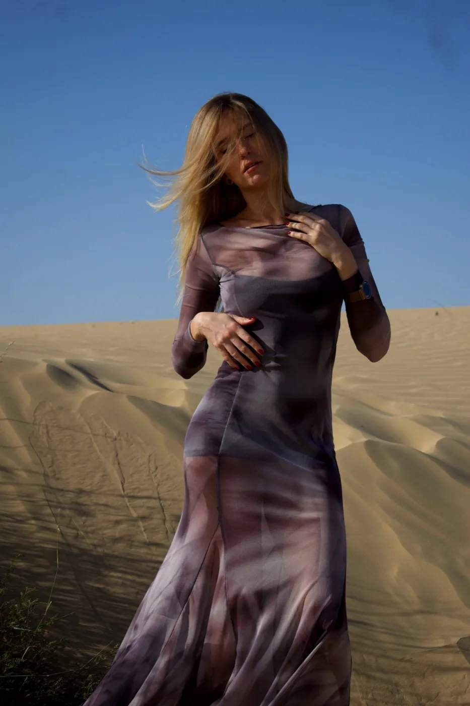
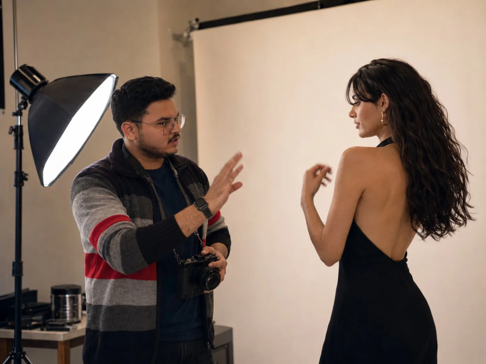
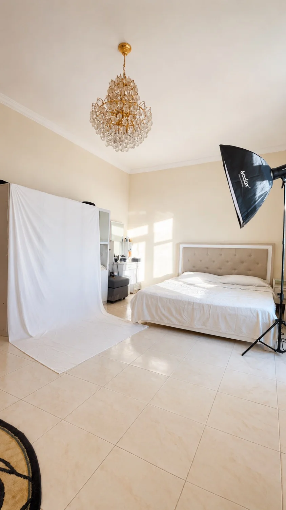

Kate has been in front of my camera more than four times. We have shot in different places, in different light, in different moods. And when we put every set side by side, the one that gave us the best results was also the quietest: an indoor session, on a sofa, against a plain wall, with the air conditioning on.
I have photographed a lot of models in Dubai, and I have started to notice a pattern in the frames I am proudest of. They are very rarely the ones with the most dramatic backdrop. They are the ones where the person in front of the camera has completely stopped thinking about the camera. Everything in this guide comes back to that: where you shoot decides how comfortable you are, and how comfortable you are decides how you look.
The session where nothing was happening
Look at the pictures of Kate in this article. There is no skyline in them. No sunset, no sand, no fountain. A sofa, a plain wall, soft light, and her. She leans on the arm of the sofa with her head resting on her hand. She lies back with one arm raised over her head. She looks into the lens like she knows exactly who is on the other side of it.
That is what I mean by comfort. It is not a mood I created. It is what happens when nothing in the room is asking anything of you. No one is checking the time. No one is walking past. You are not squinting, you are not sweating through your makeup, and you are not in a space that belongs to strangers. You are just a person, in a room, being photographed by someone you trust.


Kate has worked with me enough times that I can compare. Her indoor session is the one I would point to if you asked me for proof of everything in this article. Good light helps. A good photographer helps. But the thing you cannot buy, rent or direct into a frame is a person who is genuinely at ease.
Same model, three settings, one clear answer
Olga is another model I have shot in more than one place. We did a desert shoot. We did an indoor shoot. We did the beach as well. Every setting gave us something, and I would happily shoot any of them again. But when we sat down and looked at all of it together, her best pictures came from two of them: the desert, and indoors.


Those two sound like opposites, and in a way they are. But they have something in common: nothing in between. In the desert, the place is so striking that everything else falls away. In a quiet room, there is nothing to look at except the person. The settings that are hardest to shoot well are often the ones in the middle: busy, bright and hot, neither dramatic enough to be the story nor calm enough to disappear.
That is the rule I now use when someone asks me where to shoot. Either the place has to be extraordinary, or the room has to be so calm that you forget it is there.
The four types of photoshoot in Dubai
When people say "photoshoot location" in Dubai, they usually mean one of four things. Here is the simple version, and then I will be honest about what each one is really like.
Studio shoot. A rented photography studio with backdrops and lighting, booked by the hour.
Outdoor shoot. A public open-air spot: the beach, the marina, a street, a park, a rooftop.
Location shoot. A place chosen for its own character: a hotel, a heritage house, a cafe, an architectural landmark, the desert. It often needs permission or a fee.
Indoor shoot. An ordinary room, lit with the photographer's own equipment. Your home, mine, or a space we agree on together.
| Shoot type | Best for | Watch out for | Summer in Dubai |
|---|---|---|---|
| Studio | Seamless backdrops, large setups, several looks or people | Hourly rental, the clock, an unfamiliar room | Comfortable once you are inside |
| Outdoor | Natural light, movement, energy, golden hour | Heat, crowds, wind, short good-light windows | Hard from May to September |
| Location | When the place is part of the story | Permissions, fees, logistics, privacy | Depends on the place |
| Indoor | Digitals, portfolio base, headshots, personal branding, soft editorial | Needs a clean wall and enough floor space | Comfortable all year |
The studio shoot: control, with a clock attached
A studio is the classic answer. You get seamless backdrops, stable light, no weather and no passers-by. For e-commerce, large sets, group shots and big multi-look campaigns, I will happily book one. It is the right tool for those jobs.
But think about what a studio does to the person standing in front of the camera. You are in a space you do not know, with equipment you do not recognize, and a booking that ends at a fixed hour. The first twenty minutes go on setup and small talk. Just when you are starting to relax and your expression is finally coming alive, someone mentions there are forty minutes left. Everybody is quietly watching the time, and the photographer, however kind, is too.
There is also the part nobody mentions before the shoot: the journey. You do your makeup at home, then travel across the city in 40-degree heat, find parking, walk to the building and arrive already a little tired. Studio rental is usually charged on top of the photographer's fee as well, which is why it is worth reading the photoshoot cost guide before you book.

The outdoor shoot: beautiful light, on the sun's terms
Outdoor light is hard to beat when it behaves. From roughly October to April, with soft mornings and long golden evenings, Dubai gives you some of the best portrait light there is. A beach, a skyline, a bit of wind in the hair: it brings an energy that a plain room cannot. I wrote about the best hours in my guide to golden hour in Dubai.
The problem is the other half of the year. From May to September, daytime temperatures sit between 40 and 48 degrees, and the humidity on the coast makes it feel worse. Makeup slides within minutes, models run out of energy, outfits stop being comfortable, and the usable window shrinks to an hour after sunrise and an hour before sunset. I covered all of that in shooting portraits in Dubai's heat. Add crowds, wind and the occasional request to stop shooting in a public space, and outdoor sessions need a lot more planning than they look like they do.

The location shoot: when the place is the story
A heritage house, a quiet hotel lobby, a cafe with the right tiles, a rooftop, a stretch of desert. A location shoot makes sense when the place itself is part of the picture: fashion editorials, brand campaigns, lookbooks, travel-style stories. Olga's desert frames are the best example I have. The dunes did half the work.
It also adds logistics. Many Dubai locations need permission, some charge fees, and almost all of them have opening hours, other guests and rules about equipment. You lose privacy, and you lose time moving between spots. If you want to see what is possible, my guides to the best photography locations in Dubai and a desert photoshoot cover the real-world details.
The indoor shoot: the one I keep coming back to
This is the one I want to spend the most time on, because it is the hardest to find and the one that changes the most for the person being photographed.
An indoor shoot is exactly what it sounds like: a normal room, with a normal wall, in a place that feels comfortable. It can be the model's home, my own place, or somewhere we agree on together. I bring the lights. You bring yourself.
Picture the studio morning I described above. You are up early. You spent ninety minutes on makeup. You crossed the city in the heat, found a place to park, and walked into a room that belongs to strangers, with the sound of a clock somewhere in the back of your head. Now picture the same shoot somewhere you know. The air conditioning is humming. Your playlist is on. There is water within reach, a mirror leaning against the wall, and the sofa you have sat on a hundred times. Nowhere to be afterward.
The face relaxes before the body does. And a relaxed face is the one thing you can't fake in front of a camera.
The clock disappears. There is no rented slot ending at a fixed hour. We agree on the session length with you, not with a booking calendar. You do not have to rush a look because the next group is arriving. If a pose is not working, we try another one. If you need ten minutes to reset, you take them.
The heat stops being your problem. Your makeup stays where your makeup artist put it. You do not arrive wilted, squinting or sweating through a structured outfit. Nobody is exhausted by the third look. In a Dubai summer, that alone is reason enough.
You can use a mirror. This is the part models tell me they love most. At your place, you can practice in front of your own mirror before I pick up the camera, and keep a mirror in the room while you pose. You see what the camera is about to see. You adjust a chin, a shoulder, a hand, a hip, without waiting for me to say anything. Posing stops being a guessing game, and the photos reflect that. If you are not sure where to start, my guide on how to pose for a portrait photoshoot pairs well with it.
Familiar space, familiar you. Your music. Your water. Your wardrobe in the next room instead of in a bag in a car. Nothing in the room is new, so there is nothing to be nervous about, and people who are not nervous look like themselves. For first-timers, this is the single biggest difference I see.
A quiet, honest background. Some concepts need nothing behind you at all: a plain wall, a window, a curtain, a sofa. Model digitals, a portfolio base, headshots, personal branding, a soft and subtle editorial look. These are exactly the frames agencies and clients want to see first, and a calm indoor space delivers them better than a busy outdoor spot does.
Not every shoot is for a portfolio
Diana came to me for something different. Her shoot was for personal purposes: not for a portfolio, not for an agency, and not for anyone to review, rank or submit. It was hers.
That changes what a room has to do. A portfolio shoot asks you to show a version of yourself that works for a client. A personal shoot asks for the version that works for you, and that version only shows up where you feel safe. It is hard to get there in a rented studio with a clock on the wall. It is much easier in a quiet, private space, with only the people who need to be there.
If you have ever wanted portraits for yourself, to mark a year, a change, a season of your life, or simply because you wanted to see yourself clearly, an indoor session is where I would start.
The picture at the top of my homepage
Then there is Darya. Of every shoot I have done, hers is the most beautiful, and you have probably already seen it: her photograph is the first thing on the homepage of this website.
Look at what is in the frame. A white shirt. White bedding. A plain wall. Soft light. Her head resting against her arm, looking straight at you. No landmark, no skyline, no golden hour. If I had to choose one picture to explain what I do, it would be that one, and it was made in a quiet room.
That is the quiet argument of this whole article. The picture I chose to open my website with is not the most dramatic one I have. It is the most honest one.
A first shoot in Dubai, in a room we chose together
One session I still think about was a model's very first shoot in Dubai. I will not use her name, because it is her story to tell, but I will tell you how it went.
We talked it through beforehand, and instead of booking a studio by the hour, we booked a space together. Somewhere that suited the concept, and somewhere she felt at ease. She had the say in it. I brought the lights.
A first shoot in a new city already has plenty to be nervous about: a new photographer, a new set of expectations, the pressure of wanting the pictures to be good. The room did not have to be one of them. And when a room is not something you are managing, you can put all of that energy into the pictures.

She later left a review on my ModelManagement profile. I will keep her name out of it, but her words say what I try to build every session around:
"It was a pleasure working with Hatim. He is such a great photographer as well as he is a lovely person. I highly recommend working with him, you are going to have an amazing time together!"
Aspiring Model (name withheld), ModelManagement, December 2024
An amazing time together. That is not a sentence anyone writes about a rented hour on a clock.
Relaxed does not mean casual
A calm room is not the same as a casual shoot. I bring my own professional lighting to every indoor session, so the quality of the light is never left to the window or to a ceiling lamp. The setup is the same kind I would use in a studio, only it travels.

Whose place? Yours, mine, or somewhere we agree
An indoor shoot does not have to be at your home. It can be at yours, at mine, or at any space we choose together: a friend's apartment, a short-term rental for the day, a quiet room that suits the concept. What matters is that it is calm, clean and comfortable for you.
If you would rather not host someone you have just met, that is completely fair, and I would think less of any photographer who did not understand it. We can choose a neutral space, you are welcome to bring a friend, and I am happy to share my previous work and references before the day. If you are unsure how to judge a photographer, my guide on spotting fake casting calls and scams in the UAE is a good place to start. For under-18 sessions, a parent or guardian is always present: see photographing minor models in the UAE.
What makes a room work for an indoor shoot
You do not need a designer apartment. In most cases, a perfectly ordinary room is enough. This is what I look for:
A clean wall or corner. Plain and light is ideal. White, cream or soft grey all work well. A plain curtain can work beautifully too.
A window you can control. Curtains or blinds let me decide how much daylight comes in, which makes the lighting predictable.
Around three by three meters of clear floor. That is enough space for a light stand, and for you to move.
A power socket nearby, and a mirror if you have one.
A little tidying. You do not need to redecorate. Just clear the clutter from the frame.
Before we book, send me three phone photos of the space on WhatsApp. It takes twenty seconds and saves an hour on the day. Some buildings also ask for notice when equipment is brought in, so a quick check with building management is worth it.
When an indoor shoot is not the right call
I would be doing you a disservice if I pretended it works for everything. An indoor shoot is the wrong choice when the concept needs scenery: a skyline, a desert, a beach, a piece of architecture. It is also not right for a large group, for shots that need a long seamless sweep, or for rooms with very low ceilings or no space for a stand. In those cases I will tell you straight, and we choose a studio or a location instead.
The best answer is often a mix, which is exactly what happened with Olga. A quiet indoor session for clean, honest frames, and a strong location for the one concept that needs it. In winter I sometimes shoot an indoor base in the morning and head out for golden hour in the evening for energy and color. You get the variety of a full book without spending an entire day in the sun.
How to choose: a quick guide by concept
First test shoot or model digitals: indoor or studio. See digitals vs portfolio and test shoots and TFP.
Professional headshots or personal branding: indoor or studio. See headshots in Dubai and personal branding shoots.
Anything in summer, from May to September: indoor or studio, with outdoor only at the edges of the day.
Energetic lifestyle or beach editorial in winter: outdoor.
Fashion editorial, hotel, desert or landmark story: location.
Lookbook or campaign with several looks or people: studio, or a location. See fashion lookbook and campaign photography.
Nervous, or your first time in front of a camera: indoor, in a space you know.
And whichever you choose, a little preparation goes a long way. Read what to wear for a photoshoot in Dubai and what actually happens at a professional photoshoot.
Frequently asked questions
Is an indoor photoshoot at home really professional?
Yes, when the photographer brings professional lighting and knows how to use it. I carry my own strobes, softboxes, stands and a backdrop, so the light is controlled and repeatable in a living room just as it would be in a studio. What changes is the setting: it is quieter, calmer and more familiar, which usually makes the model look more natural.
Do you bring your own lighting equipment to an indoor shoot?
Always. My main light is a Godox SK400II V studio strobe, shaped with a softbox or umbrella, plus a second head, stands, sandbags, spare batteries and a spare trigger. You never have to rely on the window or the room lights.
Which is better for a model portfolio: studio, indoor or outdoor?
For digitals and the clean, honest frames agencies want first, a plain indoor space or a studio is best because nothing distracts from you. For a book with variety, add one outdoor or location look. Most strong portfolios mix a quiet indoor base with one or two stronger concepts.
Can I shoot outdoors in Dubai in summer?
You can, but it is hard. From roughly May to September daytime temperatures sit between 40 and 48 degrees, makeup breaks down quickly and energy drops. If the concept allows it, shoot indoors in summer, or keep outdoor sessions short and at sunrise or just before sunset.
What if my home is small or not neutral enough?
Send me three phone photos of the space before we book. A single clean wall and about three by three meters of floor are often enough. If the room really does not work, we choose another place together: a friend's apartment, a short-term rental for the day, or a studio.
Do I have to host the shoot at my own place?
No. An indoor shoot can be at your place, at mine, or at a space we agree on together. If you prefer not to host someone you have just met, that is completely fair. A neutral location works just as well, and you are welcome to bring a friend.
Can I book an indoor shoot just for myself, not for a portfolio?
Yes. Personal portraits, to mark a year, a change or simply for yourself, are some of my favorite sessions. A quiet, private space is often the best place for them, because you can relax into a version of yourself that you actually want to keep.
Which type of shoot gives the best results?
There is no single answer, but in my experience the strongest frames come from the extremes: a place so striking it becomes the story, like the desert, or a room so calm it disappears, like a quiet indoor space. Kate's best results came from her indoor session, and Olga's best pictures came from the desert and indoors.
How much does each type of shoot cost?
It depends on session length, number of looks and how the images will be used. Studio sessions usually carry a rental fee on top of the photographer's fee; indoor sessions at a home or an agreed space do not. For a full breakdown, see the photoshoot cost guide.
If you are not sure which of the four is right for you, that is a perfectly good place to start. Tell me your concept, the month you want to shoot in, and where you would feel most comfortable. I will tell you honestly which option fits, even when the answer is a studio and not me carrying lights into your living room.
I would rather give you photos where you look like yourself than photos where we both watched the clock.
Work with me
Based in Dubai. Indoor, studio, outdoor and location sessions available year-round, with full lighting equipment carried to wherever we shoot. Models and agencies: WhatsApp is the fastest way to reach me.